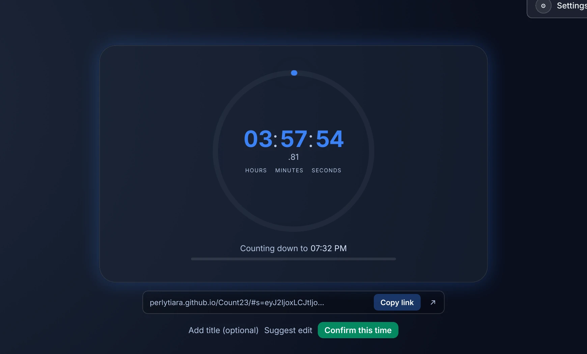

Browser app
Count23
A countdown you can send to someone. Pick a time, share it, and let them suggest a better one.
An independent workshop for people who take things apart, build prototypes, and share what worked.


Browser app
A countdown you can send to someone. Pick a time, share it, and let them suggest a better one.
Start with a sketch or a problem in the Discord. Keep prototype photos and test results together in a build log.
How to join the workshopEngineering notes link to the source, the tested build, and the work still open for contributors.
Browse engineering docs